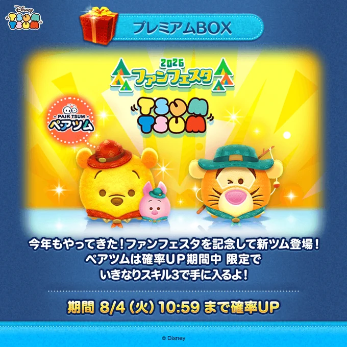
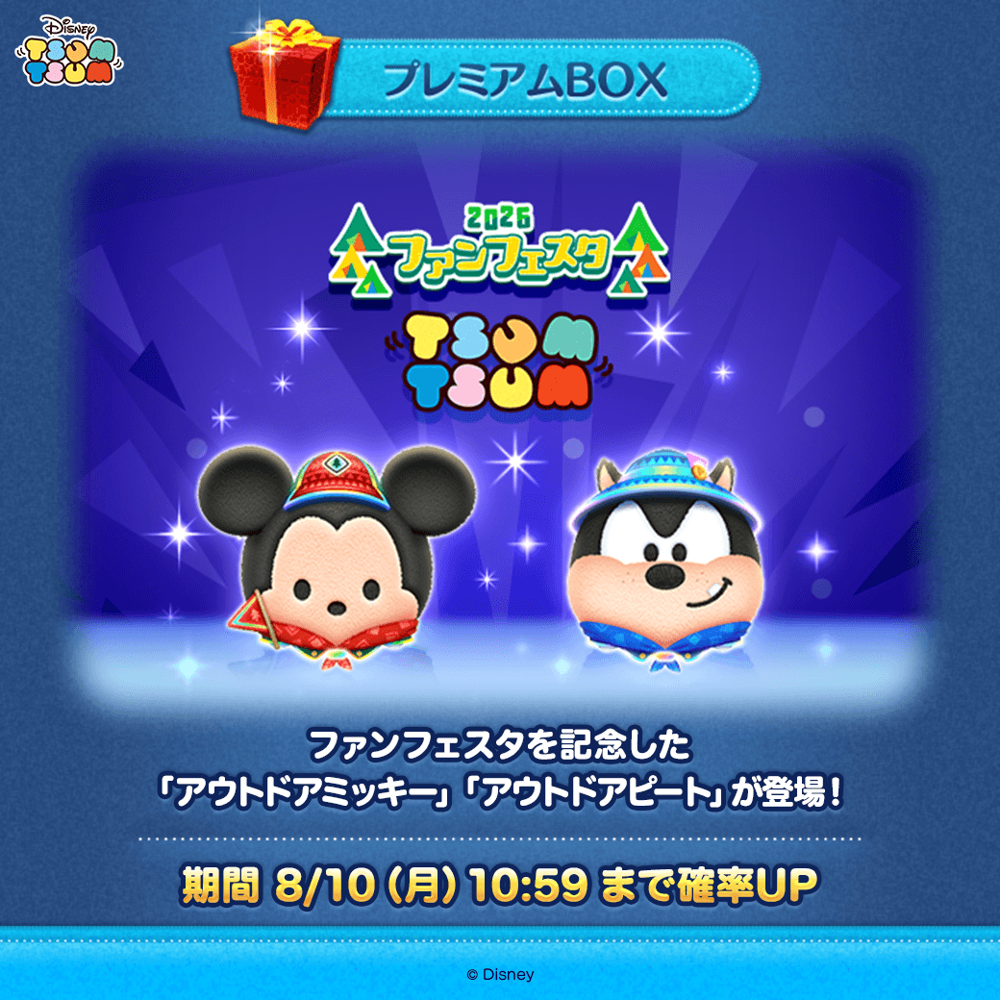
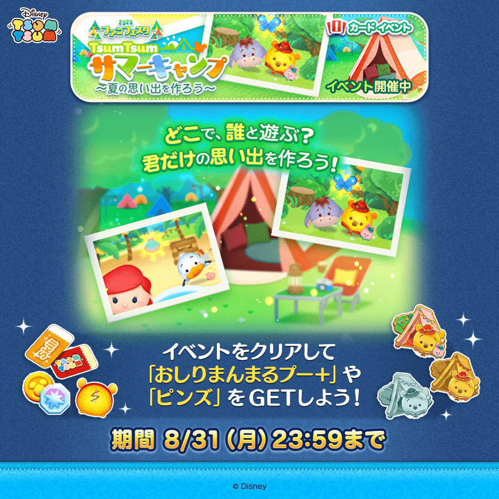
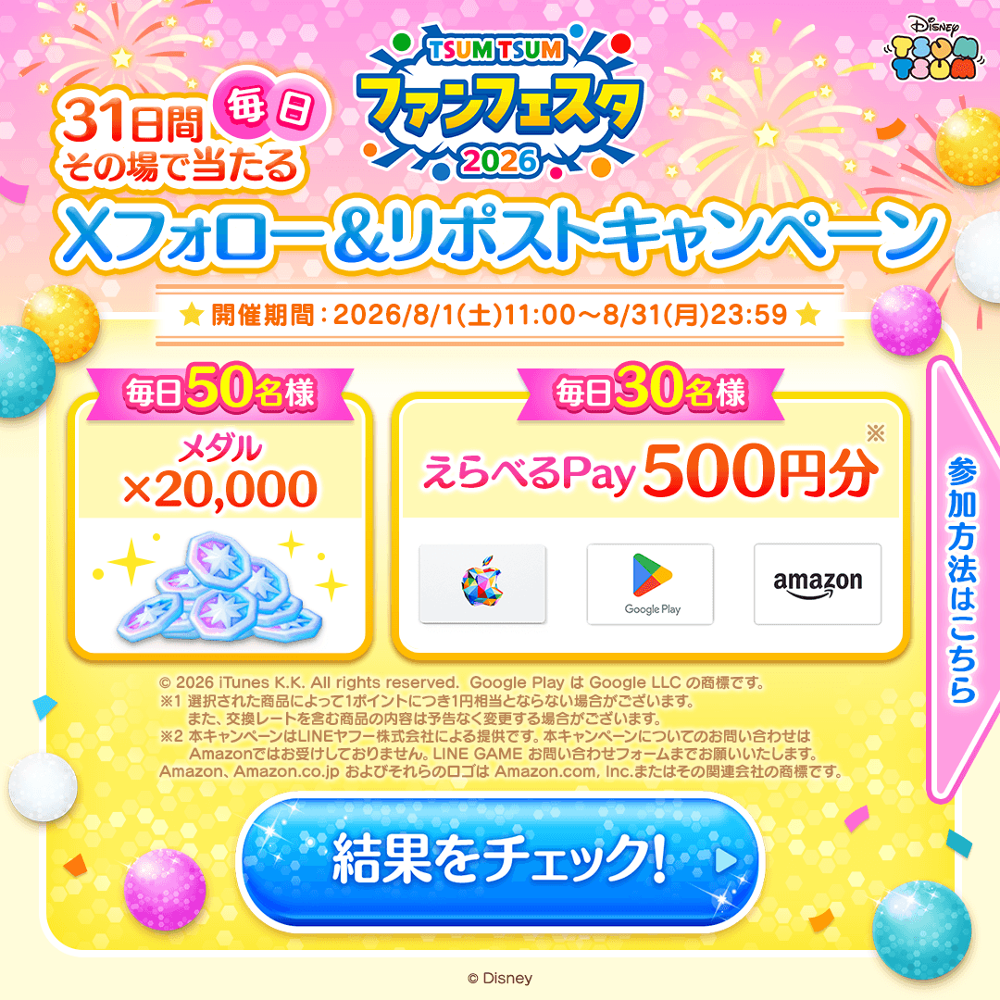
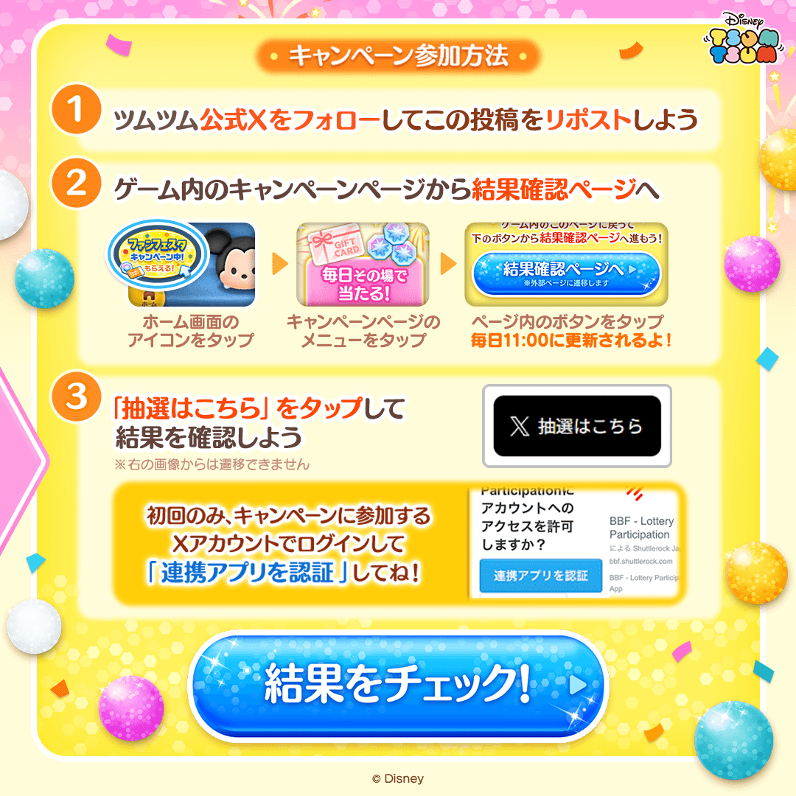
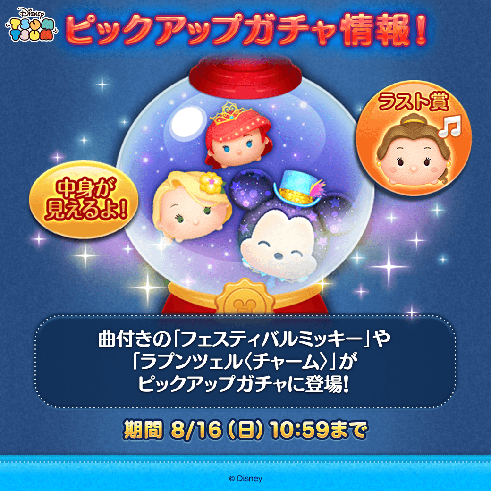
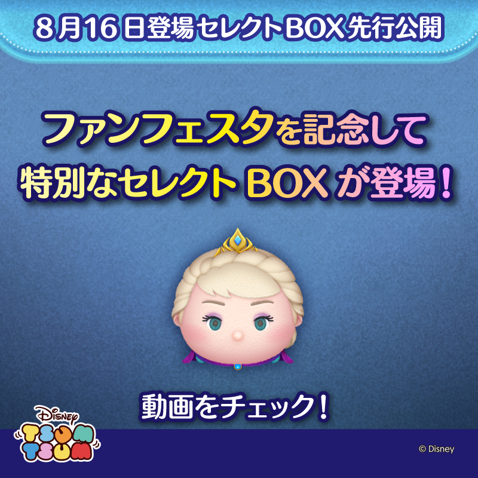

8月ツムツム最新情報
新ツム、イベント、キャンペーン、ガチャ情報を、2026年8月15日時点で確認できた公式発表から整理しました。

8月の要点
今月は、プレミアムBOXの新ツムだけでなく、イベントやキャンペーンで受け取れる報酬ツムとチケットの回収が重要です。開催中の企画が複数あるため、まず期限と受け取り条件を確認してからプレイすると取りこぼしを防げます。
8月の新ツム
| ツム | 入手方法・期間 | 公式スキル概要 | コイン稼ぎ目線 |
|---|---|---|---|
| アウトドアプー＆ピグレット | 期間限定。8月1日0:00～8月31日23:59。初回獲得時はスキルレベル3。 | 2種類のスキルを使うペアツム。両方を使うとキャンプ場の散策が始まります。 | 実測前のため評価保留。初回SL3で受け取れる点は育成コストを考える材料になります。 |
| アウトドアティガー | 期間限定。8月1日0:00～8月31日23:59。 | 横ライン状にツムを消す消去系スキルです。 | 消去系で扱いやすさに期待できますが、必要ツム数やSL別消去数を測ってから判断します。 |
| アウトドアミッキー | 8月7日登場。登場時の確率UPは8月10日10:59までで終了。 | 公式Xでは登場と確率UP期間を案内。スキルの詳細はゲーム内で確認してください。 | 実測前のため評価保留。同じアイテム条件で複数回計測してからランキングへ反映します。 |
| アウトドアピート | 8月7日登場。登場時の確率UPは8月10日10:59までで終了。 | 公式Xでは登場と確率UP期間を案内。スキルの詳細はゲーム内で確認してください。 | 実測前のため評価保留。必要ツム数、平均獲得コイン、プレイ時間を確認して判断します。 |
| おしりまんまるプー＋ | イベント・キャンペーン報酬。 | 下方向へのスワイプで、プーとつながるハニーポットが出ます。 | BOXで狙うツムではないため、期限内に報酬条件を進めて確保するのが優先です。 |

通常イベント：TSUMTSUM サマーキャンプ
開催期間：2026年8月3日11:00～8月31日23:59
ミッションをクリアするとゲーム内の時間が進み、終了した日数に応じてピンズを獲得できます。コレクションを集めるとイベントガチャ用のポイントがたまり、報酬ツム「おしりまんまるプー＋」、LINEスタンプ、スキルチケットなどを狙えます。
今月の新ツムにはイベントのキャラクターボーナスがあります。手持ちでミッション条件を満たしにくい場合は、新ツムを使うと進めやすくなる可能性があります。

キャンペーン情報
ファンフェスタ2026 スペシャルキャンペーン
開催期間：2026年8月1日11:00～8月31日23:59
参加で「おしりまんまるプー＋」を受け取れるほか、ミッション達成でスキルチケットやアイテムチケットなどを最大50枚獲得できる企画です。はちみつを全ユーザーで1億個集める「みんなでミッション」も案内されています。
公式X フォロー＆リポストキャンペーン
開催期間：2026年8月1日11:00～8月31日23:59
公式Xの対象投稿をリポストし、ゲーム内のキャンペーンページから抽選結果を確認する形式です。毎日参加できるため、参加する場合は当日の対象投稿と応募条件を公式Xで確認してください。


終了済み・期限が近い情報
- お楽しみBOXキャンペーンは8月9日23:59で終了しています。
- 前半ログインボーナスは公式Xで8月15日23:59までと案内されています。
ガチャ・BOX情報
ピックアップガチャ
曲付き「フェスティバルミッキー」、ラプンツェル〈チャーム〉、プリンセスアリエルなど全15体。ラスト賞は「Beauty and the Beast」の曲付きベルです。期間は8月16日10:59までです。

8月16日登場予定のセレクトBOX
「モンスターズ・インク〈セット〉」「女王＆鏡」「戴冠式エルサ」など、ファンフェスタに合わせた全26種類と公式Xで案内されています。終了日時とコインを使う前の最終ラインナップはゲーム内で確認してください。

コイン稼ぎ目線で優先すること
- スペシャルキャンペーンへ参加し、報酬ツムとチケットの受け取り条件を確認する。
- サマーキャンプを進め、イベントガチャの報酬を期限前に回収する。
- 新ツムを引く場合は、現在の確率アップと必要コインをゲーム内で確認する。
- 新ツムのコイン性能は1回の結果で決めず、同じアイテム条件で複数回測る。
当サイトでは、実測できたツムからコイン稼ぎランキングや実測研究へ反映します。
確認元と更新方針
開催期間や公式スキル説明は公式発表を優先し、運営者の評価・予想と混同しないよう分けて掲載しています。最終的な開催状況はゲーム内のお知らせが最も新しいため、プレイ前に必ず確認してください。